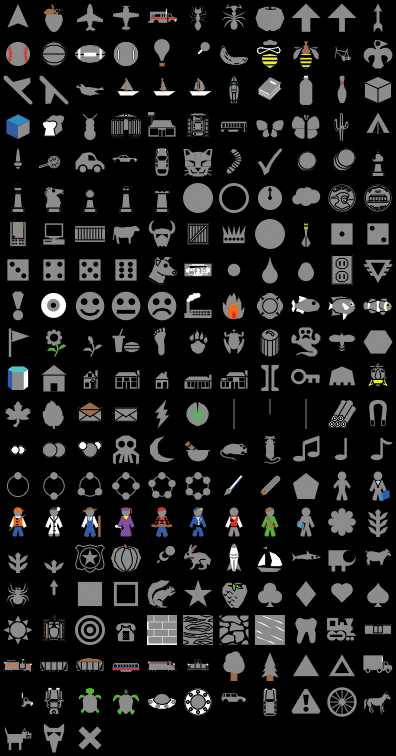

The observation design concept is about what you (the scientist) want to observe about your model in order to learn something relevant to your research question.
Some ways to observe your model include:
inspect-turtle, inspect-patch, watch-turtle, follow-turtle)set label elevation or set plabel count turtles-here)set color blue or set pcolor green)set shape "butterfly", set size 4)print, show, type, write
file-print, file-show, file-type, file-write
output-print, output-show, output-type, output-write
Download butterfly model
https://ees4760.jonathangilligan.org/models/class_10/butterfly_class_10.nlogo
and elevation file
https://ees4760.jonathangilligan.org/models/class_10/ElevationData.txt,
save them in the same folder, and open the butterfly model in NetLogo.
Go to the code tab and look at update-display and color-patches
Go to move and change
ifelse random-float 1 < q
[
move-to max-one-of neighbors [elevation] ; Move uphill
]
[
move-to one-of neighbors ; Otherwise move randomly
] to
ifelse random-float 1 < q
[
move-to max-one-of neighbors [elevation] ; Move uphill
set color red ; Set to red to indicate uphill
]
[
move-to one-of neighbors ; Otherwise move randomly
set color blue ; Set to blue to indicate random movement
] Edit update-display:
to update-display
color-patches
ifelse show-butterflies?
[ ask turtles [show-turtle]]
[ ask turtles [hide-turtle]]
if show-labels? [ ask turtles [set label elevation]]
endSet num-butterflies to 1 or 5, press setup, and run the model
When you set label to a variable:
label in update-display, and call update-display every tickEdit color-patches:
to color-patches
ifelse patch-coloring = "elevation"
[
let max-elevation max [elevation] of patches
let min-elevation min [elevation] of patches
ask patches [ set pcolor scale-color green elevation min-elevation max-elevation]
]
[
let max-turtles max [count turtles-here] of patches
let min-turtles 0
ask patches [ set pcolor scale-color cyan (count turtles-here) min-turtles max-turtles]
]
endTurn off show-labels? and set num-butterflies to 50
Setup and run the model
Clear the paths, turn show-butterflies? off, and press update-display
Write a new reporter:
to-report fraction-crowded
let crowd-count sum [count turtles-here] of patches with [count turtles-here >= 4]
report crowd-count / num-butterflies
endAdd 3 monitors to the interface:
Mean elevation gets reporter
mean [elevation] of turtlesMean turtles gets reporter
mean [count turtles-here] of patches with [any? turtles-here]Fraction crowded gets reporter
fraction-crowdednum-butterflies to 10 and setup.Inspect Patch”inspect turtle 5 at the observer line.watch turtle 3 at the observer line.Add three plots:
histogram [count turtles-here] of patches
plot 100 * fraction-crowded
plot mean [elevation] of turtles
Turtle shapes:

See Shapes Editor in the NetLogo manual for details
ask turtles [set shape "butterfly"]First open file (generally, check whether a file exists, and delete it). It’s also a good idea to write a header with the names of the columns.
if (file-exists? "my_test_output.csv")
[
carefully ; try first block. If there's an error execute the second
[ file-delete "my_test_output.csv" ]
[ print error-message ] ; error-message is a primitive
]
file-open "my_test_output.csv"
file-type "id,"
file-type "tick,"
file-print "elevation"Then at each tick, you could write data:
file-open "my_test_output.csv"
ask turtles [
file-type word who ","
file-type word ticks ","
file-print elevation
]When the model stops, you need to close the file.
to go
...
if ticks > 500
[
file-close-all
stop
]You can have multiple files open at once. Switch between them using file-open.
file-open "turtle_output.csv"
ask turtles [
file-type word who ","
file-type word ticks ","
file-print elevation
]
file-open "summary_output.csv"
file-type word ticks ","
file-type word (mean [elevation] of turtles) ","
file-print 100 * fraction-crowdedIf you have plots, you can output the data from the plot to a file using export-plot
export-plot "Fraction crowded" "frac_crowded.csv"You can export the current state of your entire model (all turtles, patches, their turtles-own, patches-own variables, etc.) using export-world
import-world
You can also export plots, world, etc. from the “File/Export” menu.
You can download the full model with different observations
we have been discussing at
https://ees4760.jonathangilligan.org/models/class_10/butterfly_class_10_observing.nlogo